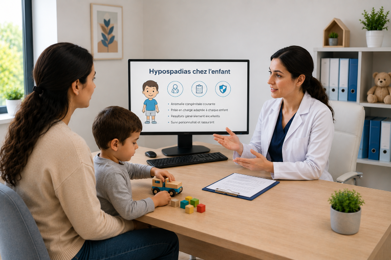

Hypospadias chez l'enfant
التشوه القضيبي عند الطفل
Tout ce que les parents doivent savoir sur l'hypospadias : définition, classification, traitement chirurgical et récupération.
كل ما يجب على الأولياء معرفته عن التشوه القضيبي: التعريف، التصنيف، العلاج الجراحي والتعافي.

Qu'est-ce que l'hypospadias ?
ما هو التشوه القضيبي؟
L'hypospadias est une malformation congénitale de la verge (pénis) chez le garçon, caractérisée par trois anomalies principales : le méat urinaire (orifice par lequel s'écoule l'urine) n'est pas situé au sommet du gland mais plus bas sur la verge, le gland présente une fente ventrale (gland fendu), et la peau du prépuce est incomplète sur la face ventrale (aspect en « capuchon »). Il s'agit de l'anomalie congénitale la plus fréquente du pénis.
التشوه القضيبي هو تشوه خلقي في القضيب عند الذكر، يتميز بثلاث شواذ رئيسية: فتحة الإحليل (الفتحة التي يخرج منها البول) لا تقع في قمة الحشفة بل في موقع أدنى على القضيب، والحشفة تظهر شقًا بطنيًا (حشفة مشقوقة)، وجلد القلفة ناقص على الجهة البطنية (مظهر "القبعة"). إنه التشوه الخلقي الأكثر شيوعًا في القضيب.
Classification selon la position du méat
التصنيف حسب موقع فتحة الإحليل
L'hypospadias se classe selon l'emplacement du méat urinaire par rapport à la verge :
يُصنف التشوه القضيبي حسب موقع فتحة الإحليل بالنسبة للقضيب:
- Hypospadias glandulaire : méat situé sur la face inférieure du gland (forme la plus légère, environ 50 % des cas)
- Hypospadias coronal : méat situé à la jonction gland/corps du pénis (environ 20 % des cas)
- Hypospadias pénien distal : méat sur le tiers distal de la verge (environ 15 % des cas)
- Hypospadias pénien proximal : méat sur le tiers proximal de la verge (environ 10 % des cas)
- Hypospadias pénoscrotal : méat à la jonction verge/scrotum (environ 3 % des cas)
- Hypospadias scrotal : méat sur le scrotum (environ 1,5 % des cas)
- Hypospadias perineal : méat situé dans le périnée, entre le scrotum et l'anus (forme la plus sévère, environ 0,5 % des cas)
- التشوه القضيبي الحشفي: فتحة الإحليل على الجهة السفلية للحشفة (الشكل الأخف، حوالي 50% من الحالات)
- التشوه القضيبي التاجي: فتحة الإحليل عند التقاء الحشفة/جسم القضيب (حوالي 20% من الحالات)
- التشوه القضيبي البعيد: فتحة الإحليل على الثلث البعيد من القضيب (حوالي 15% من الحالات)
- التشوه القضيبي القريب: فتحة الإحليل على الثلث القريب من القضيب (حوالي 10% من الحالات)
- التشوه القضيبي الصفني: فتحة الإحليل عند التقاء القضيب/الصفن (حوالي 3% من الحالات)
- التشوه القضيبي الصفني الكامل: فتحة الإحليل على الصفن (حوالي 1.5% من الحالات)
- التشوه القضيبي العجاني: فتحة الإحليل في العجان، بين الصفن والشرج (الشكل الأشد، حوالي 0.5% من الحالات)
Diagnostic et signes cliniques
التشخيص والعلامات السريرية
Le diagnostic est généralement posé dès la naissance lors de l'examen physique du nouveau-né. Les signes cliniques associés incluent :
عادةً ما يُشخص التشخيص عند الولادة أثناء الفحص البدني للمولود الجديد. تتضمن العلامات السريرية المصاحبة:
- Jet urinaire dévié vers le bas : l'enfant urine vers le bas au lieu de l'avant
- Gland fendu (bifide) sur la face ventrale
- Courbure ventrale de la verge (chordee) : incurvation vers le bas, plus marquée dans les formes sévères
- Prépuce en capuchon : excès de peau sur le dos du pénis, absence sur la face ventrale
- Testicules non descendus associés : dans 8 à 10 % des cas
- Scrotum bifide : scrotum divisé en deux poches dans les formes sévères
- انحراف بولي نحو الأسفل: يتبول الطفل نحو الأسفل بدلاً من الأمام
- حشفة مشقوقة (متشعبة) على الجهة البطنية
- انحناء بطني للقضيب (الانحناء): انحناء نحو الأسفل، أكثر وضوحًا في الأشكال الشديدة
- قلفة على شكل قبعة: فائض من الجلد على ظهر القضيب، غيابه على الجهة البطنية
- خصية غير منزلة مصاحبة: في 8 إلى 10% من الحالات
- صفن متشعب: صفن مقسم إلى جيبين في الأشكال الشديدة
Examens complémentaires
الفحوصات التكميلية
- Échographie rénale et vésicale : recherche d'anomalies urologiques associées
- Caryotype : recommandé en cas de forme sévère (perineal, scrotal) pour éliminer un trouble du développement sexuel (DSD)
- Bilan hormonal (testostérone, DHT) : en cas de suspicion de DSD
- Cystoscopie : parfois nécessaire pour évaluer le méat et l'urètre proximal
- الموجات فوق الصوتية الكلوية والمثانية: البحث عن تشوهات بولية مصاحبة
- النمط الصبغي: يُوصى به في حالة الشكل الشديد (العجاني، الصفني) لاستبعاد اضطراب تطور الجنس
- الفحص الهرموني (التستوستيرون، DHT): في حالة الاشتباه باضطراب تطور الجنس
- تنظير المثانة: ضروري أحيانًا لتقييم فتحة الإحليل والإحليل القريب
📊 Statistiques et données clés
📊 الإحصائيات والبيانات الرئيسية
- Prévalence : 1 à 3 nouveau-nés sur 300 (environ 1 à 3,5 pour 1 000 naissances masculines)
- Forme la plus fréquente : hypospadias glandulaire et coronal (70 % des cas)
- Formes sévères : 10 à 15 % des cas (pénien proximal, pénoscrotal, scrotal, perineal)
- Incidence croissante : augmentation de 50 à 100 % depuis les années 1970 dans les pays développés
- Facteurs de risque : prématurité, faible poids de naissance, antécédents familiaux, exposition in utero aux perturbateurs endocriniens
- Âge optimal d'intervention : entre 6 et 18 mois
- Taux de réussite chirurgicale : 85 à 95 % pour les formes distales, 60 à 80 % pour les formes proximales
- Taux de complications : 10 à 20 % (fistule urétrale, sténose du méat, déhiscence)
- الانتشار: 1 إلى 3 مواليد جدد من 300 (حوالي 1 إلى 3.5 لكل 1000 ولادة ذكرية)
- الشكل الأكثر شيوعًا: التشوه القضيبي الحشفي والتاجي (70% من الحالات)
- الأشكال الشديدة: 10 إلى 15% من الحالات (القريب، الصفني، الصفني الكامل، العجاني)
- زيادة في الحدوث: زيادة 50 إلى 100% منذ السبعينيات في الدول المتقدمة
- عوامل الخطر: الخداج، الوزن المنخفض عند الولادة، التاريخ العائلي، التعرض داخل الرحم للمواد الكيميائية المُعطّلة للغدد الصماء
- السن المثالي للتدخل: بين 6 و 18 شهرًا
- معدل النجاح الجراحي: 85 إلى 95% للأشكال البعيدة، 60 إلى 80% للأشكال القريبة
- معدل المضاعفات: 10 إلى 20% (ناسور بولي، تضيق فتحة الإحليل، انفصال)
Traitement chirurgical
العلاج الجراحي
L'hypospadias nécessite une correction chirurgicale pour restaurer l'apparence et la fonction du pénis. Les objectifs sont : repositionner le méat au sommet du gland, corriger la courbure (chordee), et reconstruire le gland et le prépuce.
يتطلب التشوه القضيبي تصحيحًا جراحيًا لاستعادة مظهر ووظيفة القضيب. الأهداف هي: إعادة وضع فتحة الإحليل إلى قمة الحشفة، تصحيح الانحناء (الانحناء)، وإعادة بناء الحشفة والقلفة.
Techniques chirurgicales principales
التقنيات الجراحية الرئيسية
- Technique de MAGPI (Meatal Advancement and Glanuloplasty) : pour les formes glandulaires simples, sans chordee
- Technique de Mathieu (flip-flap) : pour les formes coranales et distales avec un bon prépuce
- Technique de TIP (Tubularized Incised Plate) ou Snodgrass : technique la plus utilisée actuellement, applicable aux formes distales et intermédiaires
- Technique de Duckett (onlay island flap) : pour les formes proximales avec chordee sévère
- Technique de Koyanagi : pour les formes proximales complexes
- Urethroplastie en deux temps : première étage de correction de la courbure, deuxième étape de reconstruction urétrale 6 mois plus tard (cas très sévères)
- تقنية ماجبي (تقدم فتحة الإحليل وتجميل الحشفة): للأشكال الحشفية البسيطة، بدون انحناء
- تقنية ماتيو (الرفرف المقلوب): للأشكال التاجية والبعيدة مع قلفة جيدة
- تقنية تيب (تجليد الصفيحة المشقوقة) أو سنودغراس: التقنية الأكثر استخدامًا حاليًا، تنطبق على الأشكال البعيدة والمتوسطة
- تقنية دوكيت (رفرف الجزيرة المغطية): للأشكال القريبة مع انحناء شديد
- تقنية كوياناغي: للأشكال القريبة المعقدة
- ترميم الإحليل على مرحلتين: مرحلة أولى لتصحيح الانحناء، مرحلة ثانية لإعادة بناء الإحليل بعد 6 أشهر (حالات شديدة جدًا)
Déroulement de l'intervention
سير التدخل الجراحي
- Âge optimal : entre 6 et 18 mois (meilleure cicatrisation, moins de traumatisme psychologique)
- Anesthésie générale
- Durée : 1 à 3 heures selon la complexité
- Hospitalisation : 1 à 3 jours
- Drainage urinaire : sonde urétrale ou cathéter sus-pubien pendant 3 à 7 jours
- Pansement compressif et protection du pénis
- السن المثالي: بين 6 و 18 شهرًا (أفضل التئام، صدمة نفسية أقل)
- التخدير العام
- المدة: 1 إلى 3 ساعات حسب التعقيد
- الاستشفاء: 1 إلى 3 أيام
- تصريف البول: أنبوب بولي أو قسطرة فوق العانية لمدة 3 إلى 7 أيام
- ضمادة ضاغطة وحماية القضيب
Complications et suivi postopératoire
المضاعفات والمتابعة بعد العملية
Complications possibles
المضاعفات المحتملة
- Fistule urétrale : fuite d'urine à travers un orifice secondaire (5 à 15 % des cas)
- Sténose du méat : rétrécissement de l'orifice urinaire (3 à 10 %)
- Déhiscence de la suture : ouverture partielle de la plaie
- Nécrose cutanée : rare, liée à une vascularisation compromise
- Récurrence de la courbure (chordee)
- Uretrocèle : dilatation de l'urètre
- ناسور بولي: تسرب البول عبر فتحة ثانوية (5 إلى 15% من الحالات)
- تضيق فتحة الإحليل: ضيق فتحة البول (3 إلى 10%)
- انفصال الغرزة: انفتاح جزئي للجرح
- نخر الجلد: نادر، مرتبط بتعطل التروية الدموية
- عودة الانحناء (الانحناء)
- توسع الإحليل: توسع الإحليل
Suivi postopératoire
المتابعة بعد العملية
- Consultation de contrôle à J7, J15, 1 mois, 3 mois et 6 mois
- Surveillance du jet urinaire (direction, force, calibre)
- Surveillance de la cicatrisation et de l'aspect esthétique
- Évaluation de la fonction érectile et de la fertilité à la puberté
- Reprise chirurgicale en cas de complication (fistule, sténose)
- زيارة المتابعة في اليوم 7، اليوم 15، شهر، 3 أشهر و6 أشهر
- مراقبة تدفق البول (الاتجاه، القوة، القطر)
- مراقبة التئام الجرح والمظهر الجمالي
- تقييم الوظيفة الانتصابية والخصوبة عند البلوغ
- إعادة الجراحة في حالة المضاعفات (ناسور، تضيق)
❓ Questions fréquentes des parents
❓ الأسئلة الشائعة من الأهالي
Premièrement, ne paniquez pas. L'hypospadias est la malformation congénitale du pénis la plus fréquente et elle est parfaitement corrigeable par chirurgie. Prenez rendez-vous avec un chirurgien pédiatre spécialisé en urologie (comme le Dr Ziane Khodja) pour évaluer la forme et la sévérité de l'hypospadias. L'intervention est généralement programmée entre 6 et 18 mois, ce qui laisse le temps de bien préparer le dossier. D'ici là, aucun soin particulier n'est nécessaire : l'enfant urine normalement, il faut juste veiller à une bonne hygiène. Ne tentez jamais de circoncire un enfant atteint d'hypospadias — le prépuce est précieux pour la reconstruction chirurgicale.
أولاً، لا تقلقوا. التشوه القضيبي هو التشوه الخلقي الأكثر شيوعًا في القضيب وهو قابل للتصحيح تمامًا بالجراحة. أخذوا موعدًا مع جراح أطفال متخصص في المسالك البولية (مثل الدكتورة زيان خوجة) لتقييم الشكل والشدة للتشوه القضيبي. يُبرمج التدخل عادة بين 6 و 18 شهرًا، مما يترك الوقت لإعداد الملف جيدًا. حتى ذلك الحين، لا يُحتاج لعناية خاصة: الطفل يتبول بشكل طبيعي، يكفي الحرص على النظافة الجيدة. لا تحاولوا أبدًا ختان طفل مصاب بالتشوه القضيبي — القلفة ثمينة لإعادة البناء الجراحي.
Même si l'enfant urine, l'hypospadias non corrigé pose plusieurs problèmes à long terme. Fonctionnellement, le jet urinaire est dévié vers le bas, ce qui oblige l'enfant à s'accroupir pour uriner et peut causer des problèmes d'hygiène et de socialisation (école, piscine, toilettes publiques). Esthétiquement, l'aspect du pénis est altéré, ce qui peut affecter la confiance en soi à l'adolescence et à l'âge adulte. Sexuellement, la courbure ventrale (chordee) peut rendre les rapports sexuels difficiles ou douloureux plus tard. Pour la fertilité, le dépôt du sperme loin du col utérin peut réduire les chances de conception. La chirurgie vise à corriger tous ces aspects pour un développement physique et psychologique harmonieux.
حتى لو كان الطفل يتبول، التشوه القضيبي غير المصحح يسبب عدة مشاكل على المدى الطويل. وظيفيًا، تدفق البول منحرف نحو الأسفل، مما يُجبر الطفل على القرفصاء للتبول وقد يسبب مشاكل في النظافة والاندماج الاجتماعي (المدرسة، المسبح، المراحيض العامة). جماليًا، مظهر القضيب مُشوّه، مما قد يؤثر على الثقة بالنفس في المراهقة ومرحلة البلوغ. جنسيًا، الانحناء البطني (الانحناء) قد يجعل العلاقة الحميمة صعبة أو مؤلمة لاحقًا. للخصوبة، إيداع الحيوانات المنوية بعيدًا عن عنق الرحم قد يقلل من فرص الحمل. تهدف الجراحة إلى تصحيح كل هذه الجوانب لنمو جسدي ونفسي متناغم.
L'âge de 6 à 18 mois est considéré comme optimal pour plusieurs raisons. Cicatrisation : la peau de l'enfant cicatrise mieux et plus rapidement que celle de l'adulte, avec moins de cicatrices. Psychologique : l'enfant n'a pas encore de mémoire traumatique des soins, et la période préscolaire permet une récupération sans stress scolaire. Anesthésie : les risques de l'anesthésie générale sont très faibles à cet âge chez un enfant en bonne santé. Tissus : les tissus sont plus malléables et la reconstruction est techniquement plus facile. Opérer avant l'âge de 2 ans évite aussi les problèmes de socialisation (change en crèche, piscine) et garantit que l'enfant n'aura aucun souvenir de l'intervention.
يُعتبر سن 6 إلى 18 شهرًا مثاليًا لعدة أسباب. التئام الجرح: جلد الطفل يلتئم بشكل أفضل وأسرع من جلد البالغ، مع ندبات أقل. النفسي: الطفل ليس لديه ذاكرة صدمية للعناية بعد، وفترة ما قبل المدرسة تسمح بالتعافي بدون ضغط دراسي. التخدير: مخاطر التخدير العام ضئيلة جدًا في هذا السن لطفل بصحة جيدة. الأنسجة: الأنسجة أكثر مرونة والإعادة بناء أسهل تقنيًا. إجراء العملية قبل سن 2 سنة يتجنب أيضًا مشاكل الاندماج الاجتماعي (التغيير في الحضانة، المسبح) ويضمن أن الطفل لن يتذكر التدخل.
Non, et c'est très important. Dans l'hypospadias, le prépuce est indispensable pour la reconstruction chirurgicale. Le chirurgien utilise le tissu du prépuce (souvent en excès sur le dos du pénis) pour reconstruire l'urètre, le gland et la peau pénienne. Une circoncision préalable rendrait la chirurgie beaucoup plus difficire, voire impossible, et obligerait à utiliser des greffes de peau ailleurs sur le corps (avec des cicatrices supplémentaires). Après l'opération, l'aspect final peut ressembler à une circoncision (prépuce reconstitué court) ou le prépuce peut être conservé selon la technique et les préférences parentales. C'est une discussion à avoir avec le chirurgien avant l'intervention.
لا، وهذا مهم جدًا. في التشوه القضيبي، القلفة ضرورية لإعادة البناء الجراحي. يستخدم الجراح نسيج القلفة (غالبًا فائض على ظهر القضيب) لإعادة بناء الإحليل، الحشفة وجلد القضيب. الختان المسبق يجعل الجراحة أصعب بكثير، أو مستحيلة أحيانًا، ويُجبر على استخدام زراعة جلد من مكان آخر في الجسم (مع ندبات إضافية). بعد العملية، قد يبدو المظهر النهائي مشابهًا للختان (قلفة مُعاد بناؤها قصيرة) أو قد تُحفظ القلفة حسب التقنية وتفضيلات الأهل. هذه مناقشة يجب إجراؤها مع الجراح قبل التدخل.
L'hospitalisation dure généralement 1 à 3 jours selon la complexité de la forme. L'enfant est opéré sous anesthésie générale et sort avec un pansement compressif sur le pénis et une sonde urinaire (ou cathéter sus-pubien) qui reste en place 3 à 7 jours. À domicile, il faut : changer le pansement selon les instructions (généralement quotidiennement), surveiller la sonde urinaire, administrer les antalgiques prescrits, et éviter les couches trop serrées. Le retour à la crèche est possible après 2 à 3 semaines. Les activités physiques intenses (toboggan, vélo, trampoline) sont à éviter pendant 4 à 6 semaines. La sonde est retirée en consultation à J3-J7. Les consultations de suivi sont programmées à J7, J15, 1 mois, 3 mois et 6 mois.
الاستشفاء يستمر عادةً 1 إلى 3 أيام حسب تعقيد الشكل. يُجرى التدخل تحت تخدير عام ويخرج الطفل بـ ضمادة ضاغطة على القضيب وأنبوب بولي (أو قسطرة فوق العانية) تبقى لمدة 3 إلى 7 أيام. في المنزل، يجب: تغيير الضمادة حسب التعليمات (عادةً يوميًا)، مراقبة الأنبوب البولي، إعطاء المسكنات المُوصى بها، وتجنب الحفاضات الضيقة جدًا. العودة إلى الحضانة ممكنة بعد 2 إلى 3 أسابيع. الأنشطة البدنية المكثفة (الزلاقة، الدراجة، الترامبولين) يجب تجنبها لمدة 4 إلى 6 أسابيع. يُزال الأنبوب في الاستشارة في اليوم 3-7. زيارات المتابعة مُبرمجة في اليوم 7، 15، شهر، 3 أشهر و6 أشهر.
Les suites sont généralement simples, mais surveillez attentivement : Fuite d'urine par un orifice secondaire (fistule urétrale) : apparition d'un jet urinaire supplémentaire en dehors du méat principal, souvent visible après le retrait de la sonde. Rétrécissement du méat (sténose) : jet urinaire fin, en gouttelettes, ou effort pour uriner. Infection : rougeur, chaleur, écoulement purulent autour du pansement, fièvre au-delà de 38,5 °C. Déhiscence : ouverture partielle de la plaie chirurgicale. Nécrose : zone noircie ou bleuâtre sur le gland ou la peau (urgence absolue). En cas de l'un de ces signes, contactez immédiatement le chirurgien. Un œdème (gonflement) modéré du gland et des paupières est normal les premiers jours.
النتائج عادة بسيطة، لكن راقبوا بعناية: تسرب البول عبر فتحة ثانوية (ناسور بولي): ظهور تدفق بولي إضافي خارج فتحة الإحليل الرئيسية، غالبًا ما يُلاحظ بعد إزالة الأنبوب. تضيق فتحة الإحليل (تضيق): تدفق بولي رفيع، على شكل قطرات، أو جهد للتبول. عدوى: احمرار، حرارة، إفراز صديدي حول الضمادة، حمى تتجاوز 38.5 درجة مئوية. انفصال: انفتاح جزئي للجرح الجراحي. نخر: منطقة سوداء أو زرقاء على الحشفة أو الجلد (طارئ مطلق). في حالة واحدة من هذه العلامات، اتصلوا فورًا بالجراح. الوذمة (تورم) المعتدلة للحشفة والجفون طبيعية في الأيام الأولى.
Le taux de réussite est élevé : 85 à 95 % pour les formes distales (glandulaires, coronales, pénien distal) et 60 à 80 % pour les formes proximales (pénien proximal, pénoscrotal, scrotal, perineal). Cependant, 10 à 20 % des interventions nécessitent une reprise chirurgicale, le plus souvent pour une fistule urétrale (fuite d'urine par un orifice secondaire) ou une sténose du méat (rétrécissement de l'orifice). Ces reprises sont généralement simples, réalisées 6 à 12 mois après la première intervention pour laisser les tissus cicatriser complètement. Il est important de comprendre que l'hypospadias, surtout les formes sévères, est une malformation complexe et que plusieurs étapes chirurgicales peuvent être nécessaires pour un résultat optimal. Le chirurgien pédiatre discutera avec vous de la stratégie la mieux adaptée.
معدل النجاح مرتفع: 85 إلى 95% للأشكال البعيدة (الحشفية، التاجية، القضيبية البعيدة) و60 إلى 80% للأشكال القريبة (القضيبية القريبة، الصفنية، الصفنية الكاملة، العجانية). ومع ذلك، 10 إلى 20% من التدخلات تتطلب إعادة جراحية، غالبًا لناسور بولي (تسرب بولي عبر فتحة ثانوية) أو تضيق فتحة الإحليل (ضيق الفتحة). هذه الإعادة عادة بسيطة، تُجرى 6 إلى 12 شهرًا بعد التدخل الأول لترك الأنسجة تلتئم تمامًا. من المهم فهم أن التشوه القضيبي، خاصة الأشكال الشديدة، هو تشوه معقد وقد تكون هناك حاجة لعدة مراحل جراحية للحصول على نتيجة مثلى. جراح الأطفال سيناقش معكم الاستراتيجية الأنسب.
Oui, dans la grande majorité des cas. L'objectif de la chirurgie est précisément de garantir une fonction urinaire, sexuelle et reproductive normale à l'âge adulte. Après correction réussie, le jet urinaire est dirigé vers l'avant, la courbure est corrigée (permettant des rapports sexuels sans douleur), et le méat est positionné au sommet du gland (permettant un dépôt spermatique optimal). Les études de suivi à long terme montrent que plus de 90 % des hommes opérés d'hypospadias ont une fonction sexuelle et reproductive satisfaisante. Les formes sévères (perineal, scrotal) peuvent parfois nécessiter des reprises et un suivi plus rapproché, mais les résultats fonctionnels restent globalement bons. Le suivi psychologique est aussi important : rassurez votre enfant, répondez à ses questions à mesure qu'il grandit, et n'hésitez pas à consulter un psychologue si nécessaire.
نعم، في الغالبية العظمى من الحالات. هدف الجراحة هو بالضبط ضمان وظيفة بولية وجنسية وتناسلية طبيعية في مرحلة البلوغ. بعد تصحيح ناجح، يكون تدفق البول متجهًا للأمام، يُصحح الانحناء (مما يسمح بعلاقة حميمة بدون ألم)، ويُوضع فتحة الإحليل في قمة الحشفة (مما يسمح بإيداع مثالي للحيوانات المنوية). تُظهر دراسات المتابعة طويلة المدى أن أكثر من 90% من الرجال المُجرى لهم عملية التشوه القضيبي لديهم وظيفة جنسية وتناسلية مرضية. الأشكال الشديدة (العجاني، الصفني) قد تتطلب إعادات ومتابعة أوثق أحيانًا، لكن النتائج الوظيفية تبقى جيدة بشكل عام. المتابعة النفسية مهمة أيضًا: أرحموا طفلكم، أجيبوا على أسئلته مع نموه، ولا تترددوا في استشارة نفسي إذا لزم الأمر.
Vous pouvez prendre rendez-vous par WhatsApp au +213 558 45 60 19 ou en appelant directement. Le cabinet du Dr Ziane Khodja est situé à Ouled Moussa, Boumerdès. Pour l'hypospadias, la première consultation permet d'évaluer la forme et la sévérité de la malformation, d'expliquer la technique chirurgicale la mieux adaptée, et de programmer l'intervention. Il est recommandé de consulter dès le diagnostic (souvent à la naissance) pour planifier l'opération dans les meilleurs délais. Nous assurons la prise en charge complète : consultation préopératoire, chirurgie, suivi postopératoire régulier, et reprises chirurgicales si nécessaire. N'hésitez pas à envoyer des photos par WhatsApp pour une première évaluation.
يمكنكم حجز موعد عبر واتساب على +213 558 45 60 19 أو بالاتصال المباشر. عيادة الدكتورة زيان خوجة تقع في أولاد موسى، بومرداس. للتشوه القضيبي، تسمح الاستشارة الأولى بتقييم الشكل والشدة للتشوه، وشرح التقنية الجراحية الأنسب، وبرمجة التدخل. يُوصى بالاستشارة فور التشخيص (غالبًا عند الولادة) لتخطيط العملية في أفضل الآجال. نضمن التكفل الكامل: الاستشارة قبل العملية، الجراحة، المتابعة الدورية بعد العملية، وإعادة الجراحة إذا لزم الأمر. لا تترددوا في إرسال صور عبر واتساب لتقييم أولي.
Vous suspectez un hypospadias chez votre enfant ?
تشتبهون في تشوه قضيبي لدى طفلكم؟
Prenez rendez-vous dès maintenant pour un examen clinique complet et une évaluation personnalisée. Une prise en charge précoce garantit les meilleurs résultats fonctionnels et esthétiques.
أخذوا موعدًا الآن للفحص السريري الشامل والتقييم المخصص. التكفل المبكر يضمن أفضل النتائج الوظيفية والجمالية.